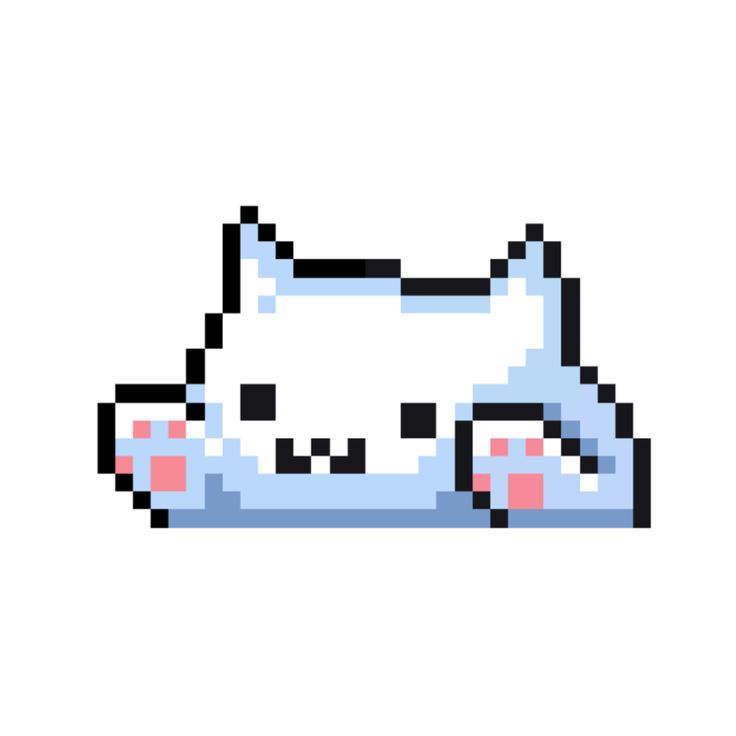
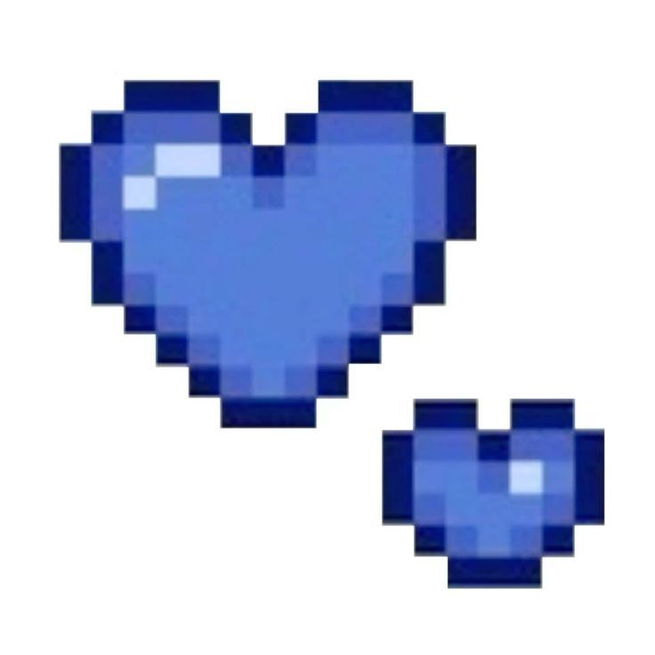
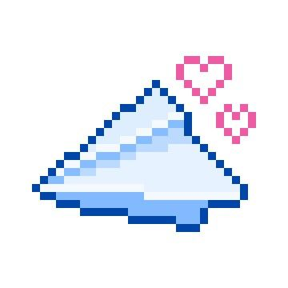
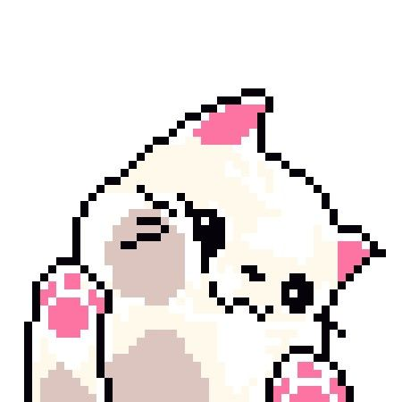
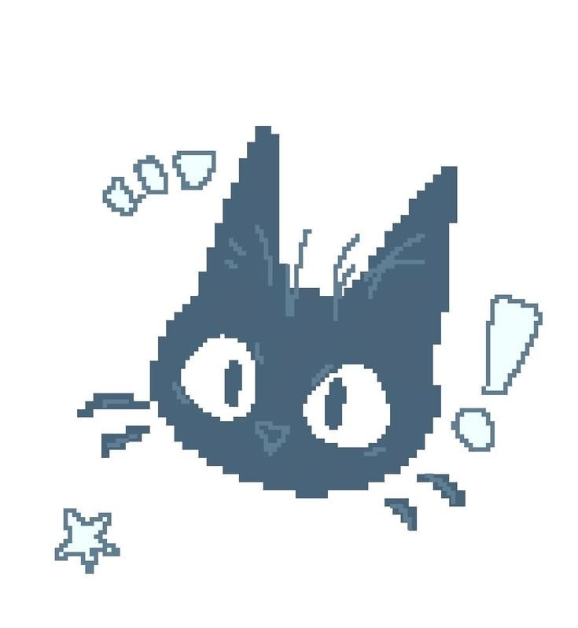

✦ a little letter ✦
for Zianne
happy birthday, dear friend





Happy Birthdaaaay, Zianne.
My plot twist and my always — I really waited for your birthday na mag-12, because why not diba? Pero first things first, thank you for being my gift, even though it’s your day. You’re my gift, why? Because in a way, you make me happier, and just your presence alone makes my life lighter. I hope I do have the same effect on you.
A year ago, we were in different paths. You were probably crying or upset about something, or happy — I remember na saimo ge chika dati kay your setup was a bit messy dati, and also mine. Who would have thought noh, nga ge-follow ra taka dati sa IG, saw nag-myday ka sa imo birthday, and giving no damn whatsoever. I mean, out of my league man gud ka, so dedma ra guds. Tas karon, here I am, writing a letter for you, waking up each day excited to talk to you and to await the time I feel your warmth.
Thank you also for being there for me, even though your life has many challenges. You never failed to reassure me, even on the times I’ve been needy. Thank you for being my solace, my unpaid sugar mommy, and a good and caring girlfriend of mine. Even though we have our differences, we still choose each other, over and over again.
Just know na I’m proud of you, and everything that you do and accomplish in your life. No matter where life brings us, I’m always proud of how strong and capable you are, in every way. And know that if naay mag-away saimo, I’m always here to cyberbully them, or just away them for you. I’ll do everything for you in a heartbeat.
Again, thank you for being here, and I’m proud of you for achieving another year — especially 18 years old. Younger you wouldn’t have imagined being here guro, and I’m so proud of you, because even though life throws you shit, you still prevail despite of it.
I think that’s also what makes turning 18 so special. You’re growing up, and there will be so many things that will change from here on out. Sometimes it might feel like everything is running out — time, moments, childhood, or even the versions of ourselves that we used to know. But I hope you never feel like you have to rush growing up. You don’t have to have everything figured out just because you’re 18. There’s still so much life waiting for you, so many memories you haven’t made, and so many versions of yourself that you’ll still meet along the way.
And if one day you look back at this version of yourself, I hope you’ll be proud of her too. I hope you remember how far you’ve come, the things you survived, the people who loved you, and all the little moments that made you who you are today. Growing up might mean leaving some things behind, but it doesn’t mean you have to lose the things that make you you.
Reminder na, you don’t need to be strong around me ha — you can always lean on me. The road after this might not be easy, but I’ll always be here for you, forever and always. Also, God is always with us, and I know na we will always be together.
I love you so much, even if it gets repetitive. I’ll never stop saying it, or making you feel it. I’m sorry if I can’t give you things like you did on my birthday, but I promise you na mu-bawi ako pagkita nato, hehehehehe.
I loooveee youuu soooo muuuch, and please do enjoy your day. I loveee youuuuu verrry much.